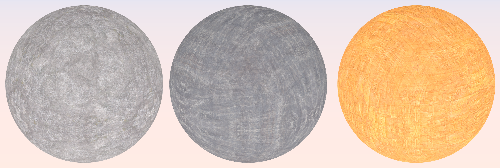

Axel Paris - PhD Student in Computer Graphics
Home
Publications
Resume
Email
Twitter
Adding Details to Implicit Surfaces
March 2, 2024.
Adding details to implicit surfaces has been a challenging problem for many years. As opposed to meshes, implicits do not provide an explicit parameterization of the surface. This prevents the use of displacement mapping typically used on mesh models, which are based on texture mapping: the process of applying a 2D image to a 3D surface. However there are still methods to work around the issue, which is the topic of this post. The goal here is not to be exhaustive - those are mostly notes and code snippets for my future self which may be useful to other people. I'll focus here on implicit surfaces represented as signed distance functions (SDF).
Noise-based details
The first, probably most straightforward technique is to add a 3D noise to the SDF. You can see many examples of this in Shadertoy, here or here, just to name a few. While such technique can theoretically add infinite details, all features come from the same noise function which suffer from its self-similar appearance. This may be solved by combining different noise function depending on which region of space we are. Another more difficult problem is to solve is that adding 3D noise everywhere may create floaters in space, which is usually not desired.
 Implicit primitives combined with different noise functions. As the amount of octaves in the noise goes up, floaters may appear.
Implicit primitives combined with different noise functions. As the amount of octaves in the noise goes up, floaters may appear.
There is no miracle solution to this problem. However, we can work around this issue if we refine the problem a little bit. Implicit primitives are also often called skeletal primitives, and their function is often decomposed into a distance to an infinitly-thin skeleton, and a substraction by a radius. So now, instead of adding noise to the global implicit function, we will add details to a given primitive in the scene (a sphere, box, or cylinder for instance).
Let's study the case of a sphere, whose SDF is the following:
`f(\mathbf{p}) = ||\mathbf{p} - \mathbf{c}|| - r`
With `\mathbf{c}` the center of the sphere and `r` the radius. Now let's make the radius a function `r \quad : \mathbb R^3 \rightarrow \mathbb \R`:
`f(\mathbf{p}) = ||\mathbf{p} - \mathbf{c}|| - r(\mathbf{p})`
`r(\mathbf{p}) = r + a n({\pi(\mathbf{p})} / l)`
With `a` the noise amplitude, `l` the wavelength, and `\pi \quad : \mathbb R^3 \rightarrow \mathbb \R^3` the projection function to the surface of the primitive (in this case a sphere). More precisely, the goal is to modify the radius of the primitive with noise - but this time, the noise evaluation is constrained to the surface of the primitive. This avoids the creation of floaters as noise is not evaluated for every different point in 3D space. This kind of noise-based primitive is also called star-shaped noise, and has been detailed in several papers (here, and here).
 So-called star-shaped noise primitives ensure that there are no floaters in the scene. The noise evaluation is constrained to the surface of the underlying skeletal primitive.
So-called star-shaped noise primitives ensure that there are no floaters in the scene. The noise evaluation is constrained to the surface of the underlying skeletal primitive.
Of course using noise is great, but as mentioned before the self-similarity of the function can be an issue. Ideally we would want the same flexibility that we have when working with meshes and displacement maps - which is not possible because of the lack of parameterization of implicit surfaces. Let's look into potential solutions.
Warping implicit surfaces
The equivalent of displacement for implicit surfaces is called warping. A warp is defined as a domain deformation and is widely used in computer graphics: for instance, image warping is commonly found in filters of messaging apps such as Snapchat to make your pictures look weird; in texture synthesis, warping is an essential tool to create procedural textures; and in implicit modeling, warping is used to create more interesting shapes as it deforms the local space around a point to create new features. In essence, a warp is a mapping `\mathbb R^3 \rightarrow \mathbb R^3` that is applied to the point before evaluating the underlying function. Any deformation is theoretically possible: translation, rotation, bending, twisting... You can find a large set of examples here.
Warping is a powerful modeling technique that has been used for decades in implicit modeling.
Now the question is how to parameterize our implicit primitives, and use it for warping? One classical solution in the industry is to use triplanar mapping and apply it in our context.
Triplanar warping
Triplanar mapping is a well-known technique for on-the-fly parameterization, as it only requires the position and normal. Greats references, in the form of an article in GPU Gems
3 by Ryan Geiss is available online, and there are also great blog posts explaining the details such as
Catlike Coding and Martin Palko. The idea behind triplanar mapping is to use the world space position of a point `\mathbf{p}` and its normal `\mathbf{n}` to determine a parameterization in 2D space.
This has a big advantage: the surface you are trying to map to the texture does not need an explicit parameterization, which is perfect for implicits. The final texture
contribution `T \quad : \mathbb R^3, \mathbb R^3 \rightarrow \mathbb \R^3` at a given point `\mathbf{p}` and normal `\mathbf{n}` can be defined as:
`T(\mathbf{p}, \mathbf{n}) = \sum_{i=0}^{3} \alpha_i(\mathbf{n}) \cdot t \circ \gamma_i(\mathbf{p})`
The weighting function `\alpha_i` computes the contribution of each mapping of `\mathbf{p}` according to the dot product between the normal and the unit axis-aligned vectors:
`\alpha_i(\mathbf{n}) = | \mathbf{n} \cdot u_i |`. The function `\gamma_i \quad : \quad \mathbb R^3 \rightarrow \mathbb R^2` computes the projection of `\mathbf{p}` on the i-th plane in world space
and finally, the function `t \quad : \mathbb R^2 \rightarrow \mathbb \R` denotes the 2D function we want to map to our surface, and can be anything from a baked texture to a procedural sum of noises.
If we interpret `t` as a function computing a color, then `T(mathbf{p}, \mathbf{n})` can be used directly to texture a implicit surfaces with albedo, as shown in the following figure.

Implicit spheres textured using triplanar mapping. Rendering was performed using Sphere Tracing.
Now what we want here is the ability to deform our implicit function `f \quad : \mathbb R^3 \rightarrow \mathbb \R^3` using triplanar warping. To do so, we treat the information of our function `T` not as a color, but as a displacement strength. As for the warping direction, we use the normal direction `n` from which we computed our weighting coefficients in the last section. The warping function `w` can then be defined as:
`w(\mathbf{p}) = \mathbf{p} - \mathbf{n} \cdot T(\mathbf{p}, \mathbf{n}) `
Then, the final implicit function `\tilde{f}` can be defined as the composition of the base shape function `f` and the warping operator:
`\tilde{f}(p) = f \circ w(p)`
 Implicit spheres warped (or displaced) with different textures.
Implicit spheres warped (or displaced) with different textures.
The only requirement for this to work is that the normal should be continuous: discontinuities in the normal will lead to discontinuities in the object itself, as these normal directions are used to define a warping direction in the function `\tilde{f}`.
References
Wyvill - The Blob Tree - Warping, Blending and Boolean Operations
ScratchAPixel - Rendering Distance Fields
Ryan Geiss - Generating Complex Procedural Terrains Using the GPU - GPU Gems 3
Inigo Quilez - 3D Distance functions